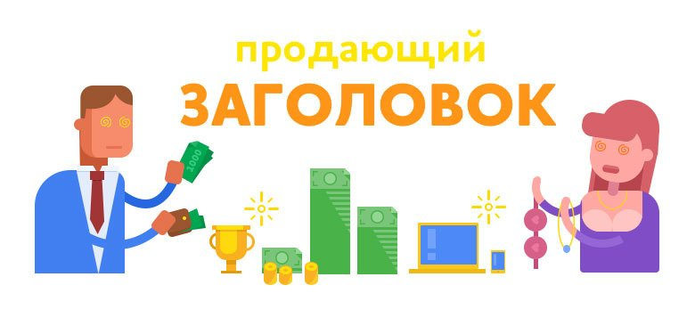

Инструментов интернет-маркетинга множество, один из эффективных – квиз сайт или сайт-опросник. Некоторые считают, что прохождение опросов – развлекательное мероприятие и в коммерции неприменимое. Но вся суть в том, какие вопросы задавать и что при этом предлагать клиентам.
Особенность сайта-опросника в том, что с первой секунды пользователь вовлекается в своего рода игру, от которой не может оторваться и уйти на полпути, как с любого другого ресурса. При прохождении опроса человек постепенно заинтересовывается, даже если до перехода на сайт не собирался что-то покупать или заказывать. В отличие от лендингов, которые продают здесь и сейчас, квиз сайты опросники работают «издалека», что помогает эффективно привлекать и «теплых», и абсолютно «холодных» клиентов.
Что такое квиз сайт
Quiz сайт – один из инструментов лидогенерации. Он призван одной лишь своей формой и персональным подходом повысить конверсию в 2-3 раза по сравнению с обычными коммерческими сайтами и лендингами. При этом не обязательно радикально менять наполнение ресурса. Quiz опросник может быть частью классического многостраничника или элементом LP.
При правильно составленных вопросах quiz тест помогает получить подробные сведенья о проблемах аудитории и параллельно повысить ее интерес к продукту компании. Вишенка на торте – контактные данные, которые клиент оставит в обмен на ценный подарок, бесплатную услугу или скидку.
По результатам опроса пользователь получает ответ на электронную почту или видит его на странице. Это может быть, например, подборка продуктов компании с учетом отмеченных ответов или персональный расчет цены.
Почему квиз-тесты получили распространение в интернет-маркетинге:
- сравнительно высокая конверсия – порядка 12-15 % и выше;
- изучение болей, потребностей, интересов клиентов;
- получение предельно точных и подробных данных за короткое время;
- высокая скорость запуска сайтов-опросников при сравнительно низкой цене;
- возможность без особых изменений встроить квиз опрос на сайт, который уже работает;
- приток пользователей и рост продаж;
- благосклонное отношение пользователей к тестам.
Квиз-опрос – своего рода викторина. Пользователи любят тесты и готовы их проходить в свободное время. Потенциальный клиент вовлекается, и это значительно повышает шансы на закрытие продажи, даже если она неожиданна для самого клиента.
Виды квизов
В интернет-маркетинге используется несколько видов квизов, которые делятся на 2 большие категории:
- Развлекательные. Их задача – привлечь внимание пользователя к компании или продукту.
- Квизы-лидогенераторы. Нужны для получения прямых контактов, а также информации о проблемах, болях клиента взамен на что-то значимое для него.
Вторая категория – это продающие квизы. Есть несколько их типов:
- подбор – такой опрос помогает клиенту выбрать товар или услугу. Пример: «Пройдите тест и узнайте, какой крем подойдет для вашей кожи»;
- расчет – это вариант онлайн-калькулятора стоимости продукта. Пример: «Рассчитайте стоимость обшивки здания по вашим параметрам»;
- викторина – это своего рода игра: пользователь с помощью теста может оценить себя или свои навыки всего за пару минут. Пример: «Пройди тестирование и узнай, какой из тебя маркетолог»;
- исследование – способ собрать мнения пользователей. Пример: «Сколько вы готовы тратить на продукты питания в месяц?».
Для бизнеса важно подобрать подходящий тип квиза с учетом деятельности организации и ее целевой аудитории.
Куда установить квиз
Опрос можно предложить пользователям в виде отдельного квиз-сайта. Обычно это лендинг длиной в один экран с отдельной ссылкой. Такой вариант хорош для компаний, которые:
- еще не имеют сайта;
- собираются предлагать с помощью квиза отдельный продукт;
- хотят разделять трафик по «теплоте» и настраивать ретаргетинг;
- активно продвигают бизнес в социальных сетях.
Второй вариант – quiz форма для сайта многостраничника. Quiz шаблон может быть встроен в тело сайта прямо на странице. Его может вызывать отдельная кнопка. Допустимо всплывающее окно или баннер, который будет открываться по времени или при попытке покинуть сайт.
Виджет квиз для сайта – это возможность применить эффективный инструмент онлайн-маркетинга компаниям, которые уже имеют ресурс с ограниченным трафиком.
Для какого бизнеса подходят квизы
Опросники многими воспринимаются как развлекательный элемент. Но именно в бизнесе они дают завидный результат. Добавить квиз на сайт есть смысл компаниям, чья целевая аудитория принимает решение взвешенно, после тщательного анализа предложений.
Примеры ниш бизнеса:
- строительство;
- производство мебели;
- дизайн интерьеров;
- оформление праздников;
- недвижимость;
- туризм;
- автомобили;
- маркетинг;
- языковые курсы.
Когда содержание услуги или предложения определяется предпочтениями клиента, квиз опросник сработает как нельзя лучше. Он подходит и для В2В, и для В2С сфер. Анкетирование с правильно составленными вопросами может частично заменить менеджера по продажам, выяснив у клиента основные моменты заказа еще до контакта. Это может быть калькулятор для расчета примерной стоимости или помощник в выборе продукта с нужными характеристиками.
Однако не стоит устанавливать квиз опросник на сайт без предварительного анализа. Этот инструмент вовсе не волшебная таблетка для любого бизнеса. Если аудитория компании знает, что ей нужно, или ищет продукт срочно, квиз-тест вряд ли поможет повысить число заказов, а в худшем случае спровоцирует обратный эффект – отпугнет потенциальных клиентов необходимостью выполнять лишние действия на сайте.
Примеры квизов
Рассматривать абстрактные сайты мы не считаем правильным, поэтому предлагаем несколько примеров квизов, реализованных на базе собственного конструктора Neiros. Возможно, это не самые идеальные опросники в плане маркетинга и реализации, но все они используются и приносят компаниям неплохие результаты.
Производитель модульных конструкций
Компания-производитель модульных конструкций и быстровозводимых зданий «Смарт модуль» предлагает клиентам пройти тест. Отвечая на 7 простых вопросов, пользователь указывает конкретные параметры сооружения и в конце получает ценный бонус – бесплатный персональный проект.
{kind=link}
Это пример создания квиз сайта путем установки заметной кнопки виджета. При нажатии открывается окно с приглашением пройти тест и получить персональное предложение.
Дополнительная мотивация для прохождения опроса – скидка, которая увеличивается с каждым новым ответом. Ответив на 7 вопросов, клиент получит скидку 10000 рублей на свой заказ. А если заявка на модульное здание площадью свыше 72 кв. м будет сделана в течение 14 дней, компания обещает оборудовать сооружение конвекторами бесплатно. Чтобы получить перечисленные бонусы, пользователю нужно лишь оставить свой номер телефона.
Стоматологическая клиника
Современная стоматологическая клиника «Артес» использует современные средства интернет-продвижения. Одно из них – квиз-форма, которая открывается на сайте при нажатии на заметную кнопку.
{kind=link}
Пациентам предложено пройти несложный тест, ответы на который дают понимание о том, в какой помощи нуждается клиент. Но за свое удобство клиника готова с лихвой отблагодарить. Оставив телефон, пациент получает право в любое время обратиться в «Артес» для консультации. Если же клиент посетит клинику в течение 10 дней, его ждет скидка и возможность воспользоваться услугой отбеливания зубов бесплатно.
Автосервис
Еще один пример реализации квиза на основе нашего конструктора виджетов – всплывающее окно формы опроса на сайте автосервиса «Астор». Для вызова достаточно клика по кнопке.
{kind=link}
Специфика бизнеса предполагает разветвленную форму квиза. Здесь пользователь может указать, какая услуга ему требуется, обозначить проблему и даже подобрать запчасти для своего автомобиля по VIN-номеру.
В отличие от многих компаний, этот автосервис не делает скидку в обмен на заявку. Но прошедших опрос пользователей ждут не менее заманчивые бонусы: бесплатная диагностика автомобиля, а также на выбор:
- детейлинг салона;
- полировка и покрытие кузова жидкой керамикой;
- комплексное техническое обслуживание;
Все это за счет компании при обращении в течение 30 дней.
Как создать конвертящий квиз в Neiros самому
Если вы ориентируетесь в интернет-маркетинге или просто хорошо знаете свою аудиторию, можно сделать квиз для сайта бесплатно своими силами. Для этого важно сформулировать, для кого этот инструмент будет предназначен, его цель и основные задачи. Если у бизнеса несколько ЦА с разными потребностями, предстоит подготовить опросники для каждой подгруппы.
В Neiros можно создать виджет квиза с последующим размещением на сайте. Для этого не нужны навыки программирования, достаточно заполнить поля настройки виджета в сервисе.
{kind=link}
При разработке квиза предстоит продумать заголовок, лид-магнит, вопросы и варианты ответов, оформление теста. Необходимо предусмотреть ценные поощрения, за которые пользователи будут обменивать свои контактные данные. Форме финальной страницы и сообщению после ее отправки тоже нужно уделить внимание.
Рассмотрим все по порядку.
Цель
Сделать квиз сайт самому легко, если есть понимание назначения этого инструмента. Формулировка цели должна стать первым шагом на пути к конвертящему опроснику. В бизнесе выделяют два направления целей:
- предложение продукта – вариант для «горячих» клиентов, готовых сделать заказ;
- помощь в решении вопроса клиента – такой тест призван «подогреть» пользователя, чтобы он осознал потребность в продукте.
Важно правильно определить цель опроса для своей аудитории.
Заголовок
Заголовок должен быть таким, чтобы при виде его пользователь захотел потратить время на тест. Это может быть нужное клиенту предложение или провокационный вопрос. Цель – завладеть вниманием.

В подзаголовке необходимо обозначить четкую выгоду от прохождения опроса. Это может быть скидка, бесплатная консультация или услуга.
Призыв к действию в заголовке обязателен. Если не попросить пользователя пройти тест, многие покинут страницу, так и не ответив ни на один вопрос.
Вопросы
По-хорошему вопросы не нужно придумывать, они уже должны быть у вас в голове. Если вы работали с клиентами, то знаете, что их интересует до оформления заказа, – это и есть те боли, которые нужно отразить в квизе.
{kind=link}
Какие должны быть вопросы:
- интересные для пользователя;
- полезные для статистики;
- простые для понимания.
Лучше не превышать количество в 10 вопросов. Чем их меньше, тем выше вероятность, что пользователь пройдет тест до конца. Однако для некоторых узких аудиторий допустимо масштабное анкетирование с несколькими десятками вопросов.
Варианты ответов
Ответы должны быть четкими и понятными. Если предполагается, что человеку будет трудно выбрать один вариант, можно добавить всплывающие подсказки с пояснениями.
{kind=link}
Желательно, чтобы пользователь не прилагал усилий при прохождении теста. Например, между вариантом с перетаскиванием ползунка и кликом предпочтителен последний. От просьб вводить текстовый ответ тоже лучше отказаться.
Многие заходят на сайты с мобильных устройств, поэтому удобство прохождения опроса в приоритете.
Поощрения
Чтобы повысить интерес клиента к тесту, стоит предусмотреть дополнительные поощрения. Пользователь получит их в конце после завершения опроса или выполнения целевого действия (заявка, контактные данные). Это может быть один ценный подарок или несколько полезных клиенту бонусов.
Скидка
В продажах это одно из распространенных поощрений. Клиенты тоже любят такие подарки, поскольку заинтересованы в снижении цены. Исключение могут составлять сферы, где стоимость продукта не на первом месте. Например, продажа дорогих автомобилей и других предметов роскоши.
{kind=link}
Хороший вариант поощрения – наращивание скидки по мере прохождения теста. Это стимулирует пользователей отвечать на вопросы, чтобы получить максимальный процент скидки. Так повышается заинтересованность и вероятность, что клиент оставит контакты или заявку в надежде приобрести продукт по сниженной цене.
Консультант
Удобный помощник в прохождении теста – онлайн-консультант. Этот инструмент значительно повышает количество завершенных опросников, поскольку помогает пользователю сориентироваться в вариантах ответов и выбрать наиболее подходящий.
Консультант размещается на каждой странице квиза и дает пояснения к каждому вопросу. Оформить «помощника» можно в соответствии с общим форматом теста, добавив имя, должность, фото консультанта.
Бонусы
Поощрить пользователя во время и после завершения опроса можно с помощью бонусов. Вот пара примеров.
Конверсии
Квиз тест для сайта имеет свою конверсию, которую легко рассчитать на любом этапе взаимодействия с клиентом. Вот ключевые точки.
Конверсия в открытие
На этапе открытия квиза конверсия зависит от таких факторов:
- привлекательность лид-магнита для аудитории;
- визуальное оформление квиза (дизайн сайта, иллюстрации);
- призыв к действию.
Последнее особенно важно, ведь «голая» кнопка без пояснений ее назначения может ввести в заблуждение клиента, и он просто не откроет опрос.
Конверсия в прохождение
Увеличить количество прохождений опроса можно двумя способами, их выбор зависит от целевой аудитории квиза.
Чтобы получать больше заявок от «холодных» клиентов, которые еще не заинтересованы в продукте, эффективно использовать поощрение в виде нарастающей по мере прохождения теста скидки.
Если квиз рассчитан на аудиторию, которая, просмотрев вопросы, покинет страницу и вернется позже с конкретной задачей, есть смысл добавить на сайт полезный контент. При этом эффективны события, которые будут настроены на каждом шаге опроса. Они помогут вернуть пользователей, покинувших сайт на любом вопросе квиза.
Конверсия в оставление заявки
Здесь принципиально важно не предлагать аудитории «голую» форму без комментариев. Стоит напомнить, с какой целью пользователь прошел опрос и для чего нужно оставить контакты или заявку. Это может быть конечная скидка, консультация специалиста или список бонусов – то, что было обещано в самом начале.
Конверсия в продажу
Это уже относится не столько непосредственно к квизу, сколько к процессу обработки заявок. Однако скрипт общения с потенциальным клиентом должен быть составлен с учетом того, на какие вопросы он уже ответил в тесте. Для каждого сегмента пользователей необходимо разработать отдельный диалог. Это упростит работу менеджера и позволит не спугнуть клиента лишними вопросами.
Анализ результатов
Создавать квиз-сайты или добавлять опросники на уже существующий ресурс бессмысленно, если не отслеживать работу этого инструмента. Аналитика помогает понять:
- насколько квиз эффективен в сравнении с другими инструментами интернет-маркетинга;
- на каком этапе тестирования уходят клиенты;
- какой результат дают внесенные изменения.
Функционал квиза позволяет вести свою аналитику, а также передавать цели в Яндекс Метрику и Google Analytics для более детальной статистики. На основе этих данных можно строить воронку по этапам и заполнению. Так, будет видно:
- сколько пользователей открыло тест;
- сколько ответило на 1-й, 2-й, 3-й и последующие вопросы;
- сколько клиентов оставили заявку;
- какие вопросы вызывают затруднения, в т. ч. при посещении с разных устройств;
- сколько времени люди тратят на каждый вопрос.
Зная это, можно корректировать вопросы, ответы, поощрения и отслеживать, насколько эффективны или неэффективны внесенные изменения.
Как продвигать квиз
Создать и установить квиз на сайт недостаточно. Даже хороший опрос не начнет приносить трафик, пока пользователи не увидят его. Продвигать квиз можно тремя основными способами:
- путем установки заметной ссылки на квиз на своем же сайте;
- в социальных сетях;
- контекстной рекламой.
Каждый из этих способов продвижения эффективен, но приоритет определяется целевой аудиторией.
Внутренние переходы
Такой способ продвижения подходит для квизов, установленных на многостраничном сайте. При этом эффективность зависит от трафика самого сайта. Если посещаемость низкая, то опрос увидит еще меньше пользователей. Поэтому использовать внутренние переходы как единственный способ продвижения квиза уместно только при хорошей посещаемости сайта.
Социальные сети
Соцсети – наиболее благодатная почва для продвижения квизов. Причем как коммерческих, так и развлекательных.
Опросы можно продвигать в социальных сетях двумя способами:
- С помощью таргетированной рекламы.
- Путем расшариваний квиза и публикации постов с ссылками на личных страницах пользователей, в сообществах.
Чтобы квиз увидело как можно больше людей, необходимо:
- добавить кнопки расшаривания на странице опроса;
- составить интересные ответы, которыми пользователи захотят поделиться с друзьями;
- закрепить пост со ссылкой на квиз в сообществе компании или на личной странице.
Контекстная реклама
Для отдельных сегментов бизнеса лучше всего подходит продвижение с помощью контекстной рекламы. Приглашение на участие в опросе отображается вместо стандартного рекламного блока в Яндексе или Гугле.
Квиз – эффективный и сравнительно недорогой способ в развлекательной форме подогреть аудиторию, повысить заинтересованность, изучить предпочтения пользователей. При этом важно, чтобы опросник был хорошо продуман и строго ориентирован на конкретную ЦА.
Оставить комментарий
Войти с помощью